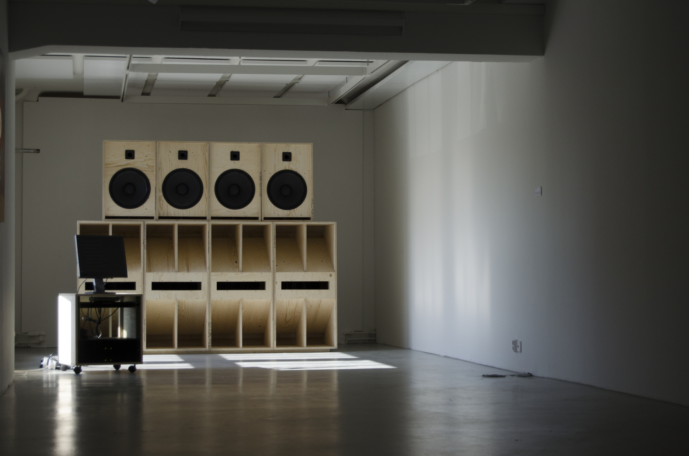
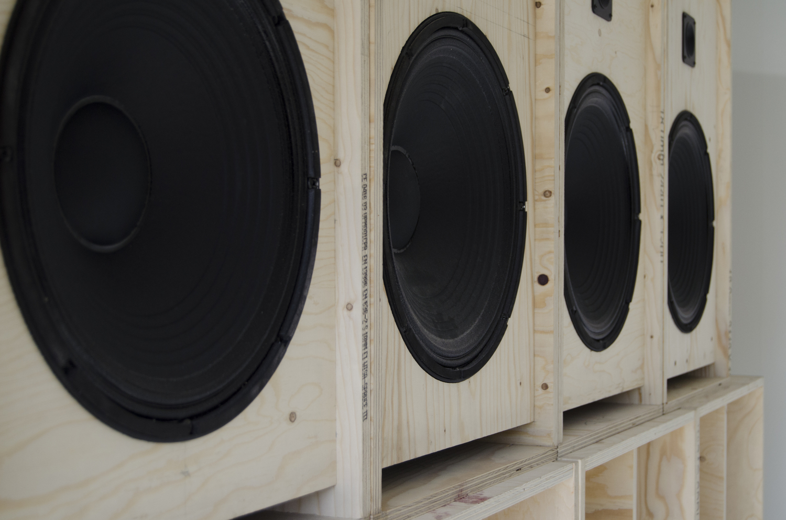
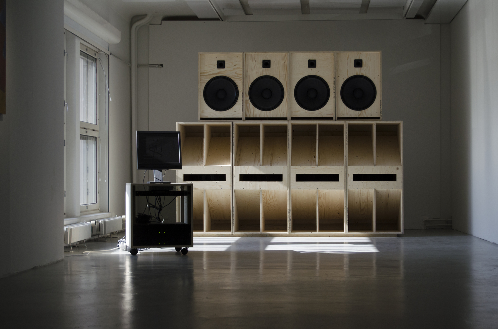
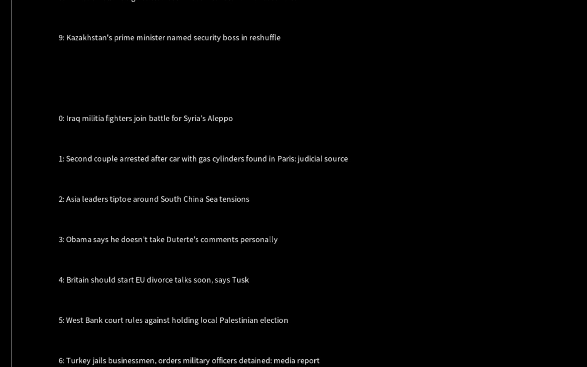

A Sound (2017). Wood, electronics, sound, computer program.
A Sound is a sound installation that came from a research into the history of the development audio technology with it's connection into military and weapon research. I was also researching how the traumas gained in the warzone - whether as a SOLDIER or civilian - were often triggered and pressed into the memory by sound more than the visual or other information.

For the work I created a DIY soundsystem of the style of REGGAE AND STUFF, rave and other sonic subcultures aiming for the highest possible sonic impact. The aural side of the work became live when a specifically made computer program - my early adventure in Java - crawling a Reuters World News feed found a mention of words "WAR", "EXPLOSION", or "BOMB". This launched a high volume musique concrete -composition of various found and synthesized sounds of explosions, destruction, meteors falling etc.

Unfortunately you will not be able to hear the composition anywhere. Part of the conceptual nature of the work was that the compostion was only heard from this specific soundsystem marking the specific time of something bad happening during the exhibition.

The work was exhibited during my MFA -exhibition at the Exhibition Laboratory in Helsinki and later during my 2018 solo show at the Titanik -gallery in Turku.
